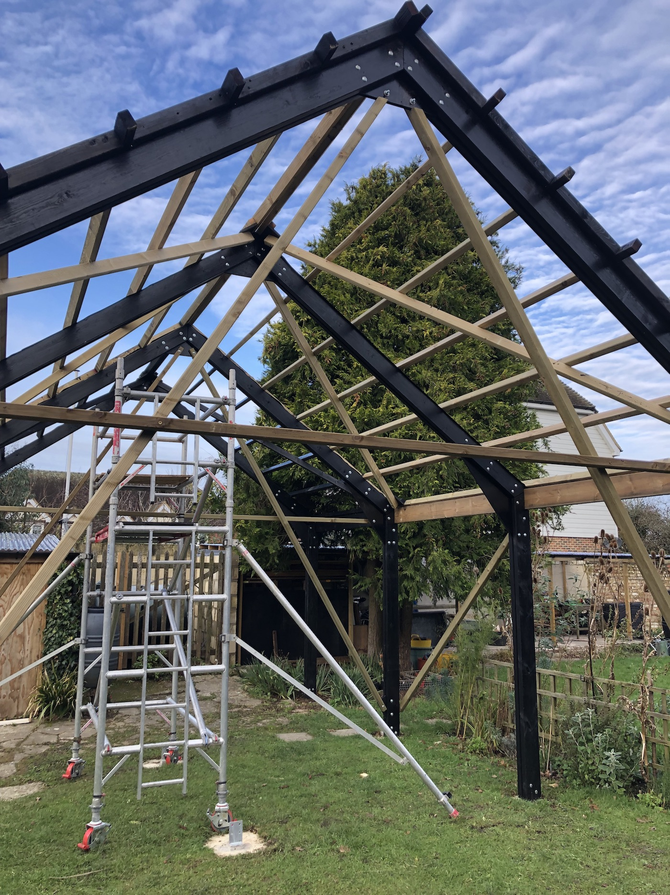
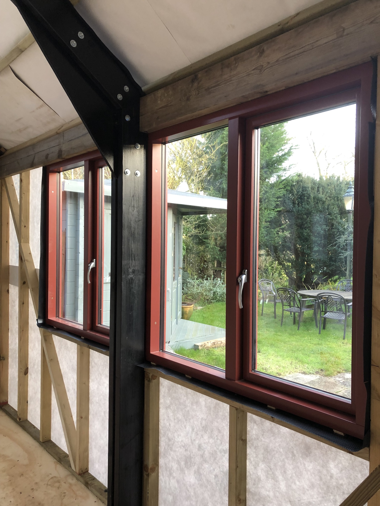
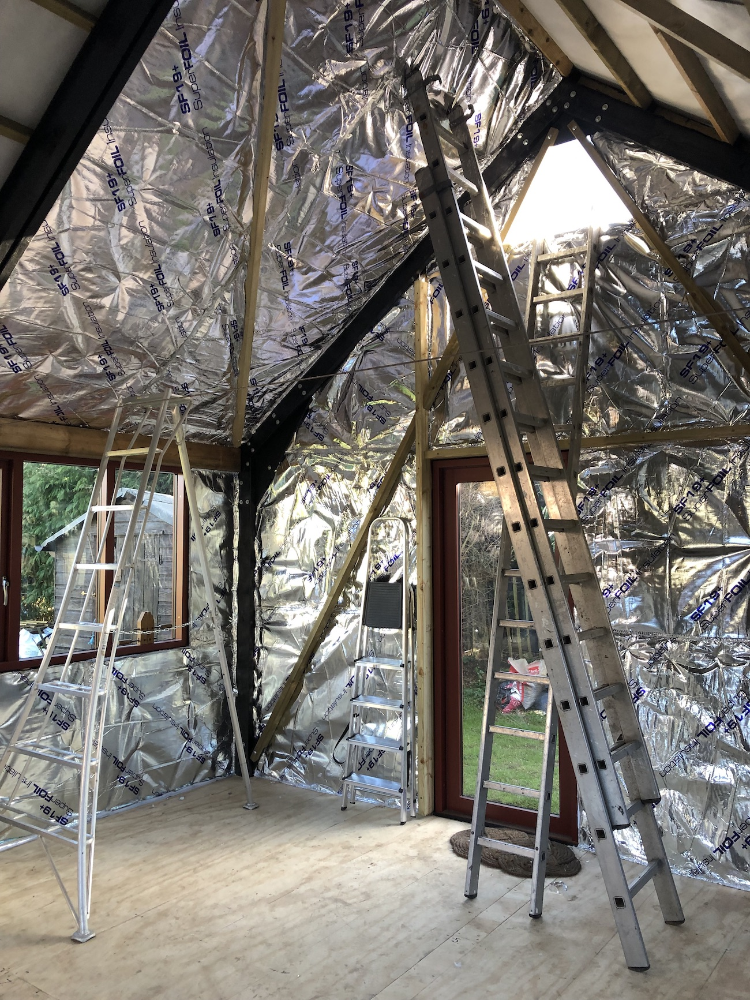
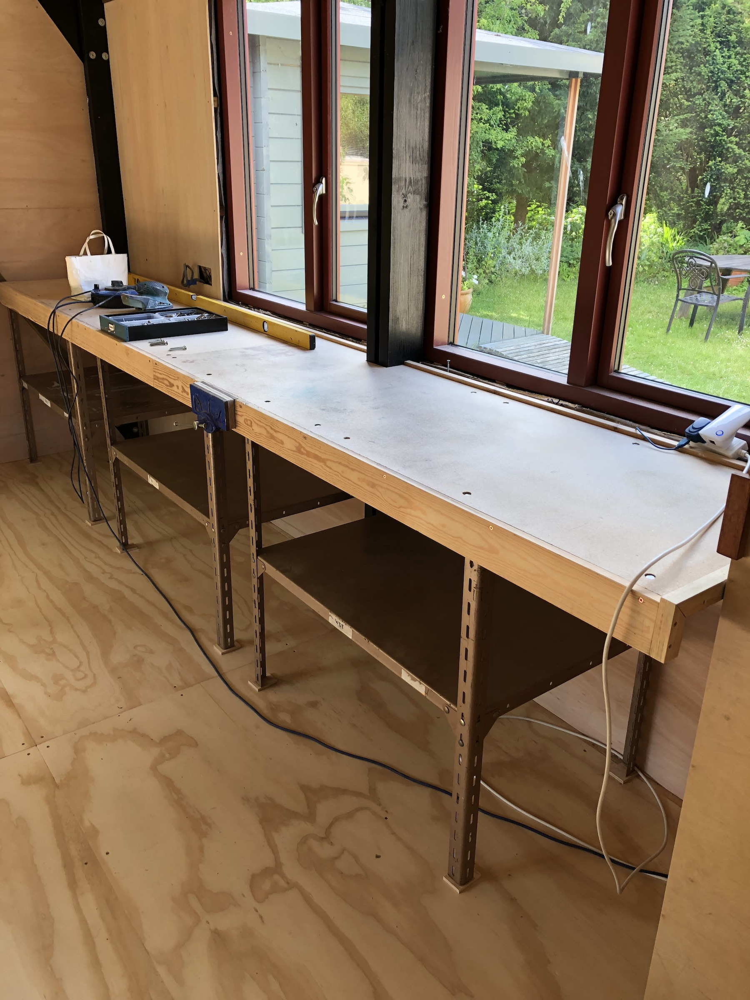

The Workshop

The first outhouse to be built at Tyle House Oast since it was a farm, as it happens in much the same position as a barn had been before. The new workshop bullding will make one long garden into two more sheltered gardens and hopefully provide a workplace for years to come. But first to build it.

The new building positioned for best solar orientation and to create two more sheltered gardens, front and back.

Moving the log cabin summer house to make enough space required lifting it, sawing off the foundation posts to free it from the ground and rolling it on scaffold poles to its new home .


Digging and casting foundations. As the building was to be built over a winter I opted to leave the lawn intact for as long as possible in the build to keep the site clean and easy to work on.

The frame designed to be built and the roof put on before walls and floor go in so as to work under cover through the winter.


Building and raising the frames

Lifting with an 'a frame' and the main sheet blocks from the boat.

The frame is up.
And the roof goes on in single 3.3m length sheets of corrugated steel.
Time to celebrate. Topping out by the fire pit.

Walls.

Floor.

Windows.
Boarding.


The solar panels are installed. These and the associated batteries will provide power for the whole house. This is the first time scaffolding has been needed.

Insulation.

Benching.

And at last - a working workshop.